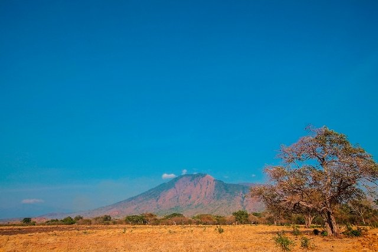
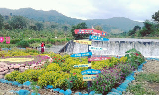

Destinasi Tempat Wisata
Website kami merekomendasikan beberapa tempat wisata yang menarik untuk anda, check it out!
Puncak Rembangan
Puncak Rembangan - Destinasi Keluarga dengan Pemandangan Paripurna

Taman Nasional Baluran
Nikmati Indahnya Taman Nasional Baluran - Kehidupan di Puncak Kemarau

